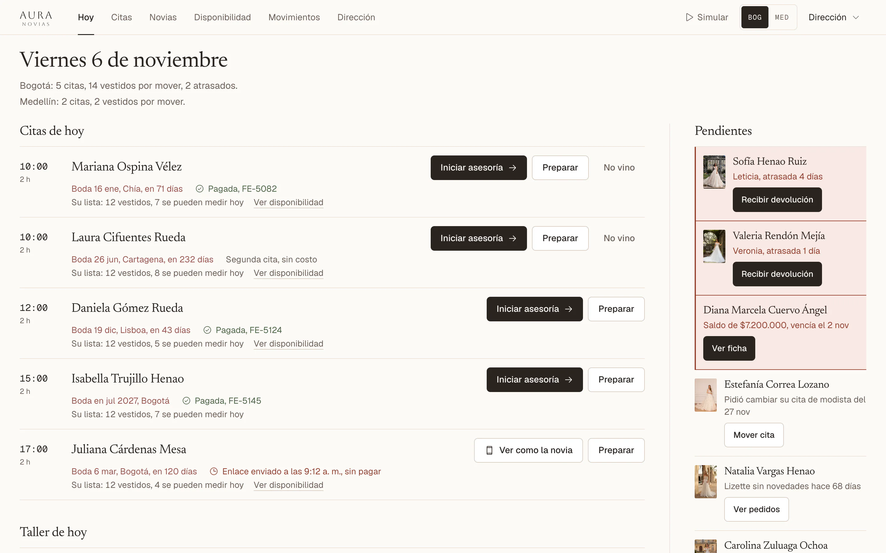
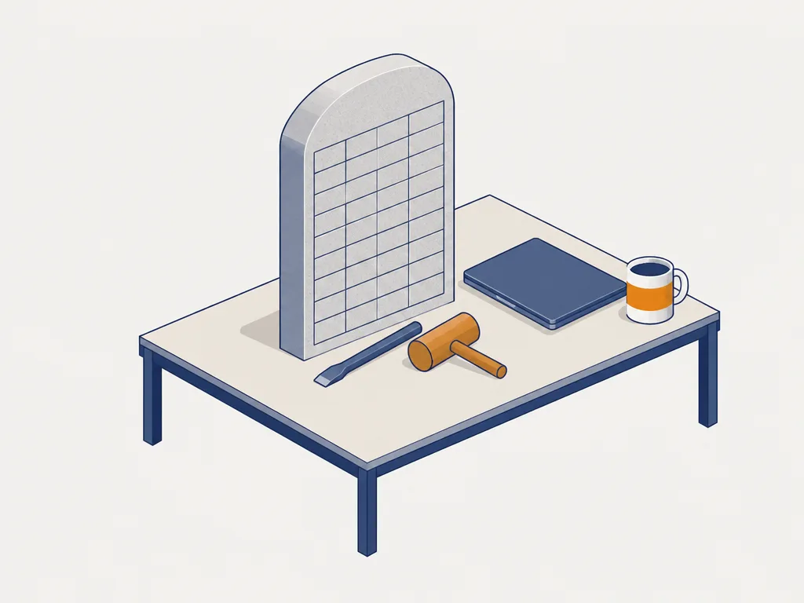
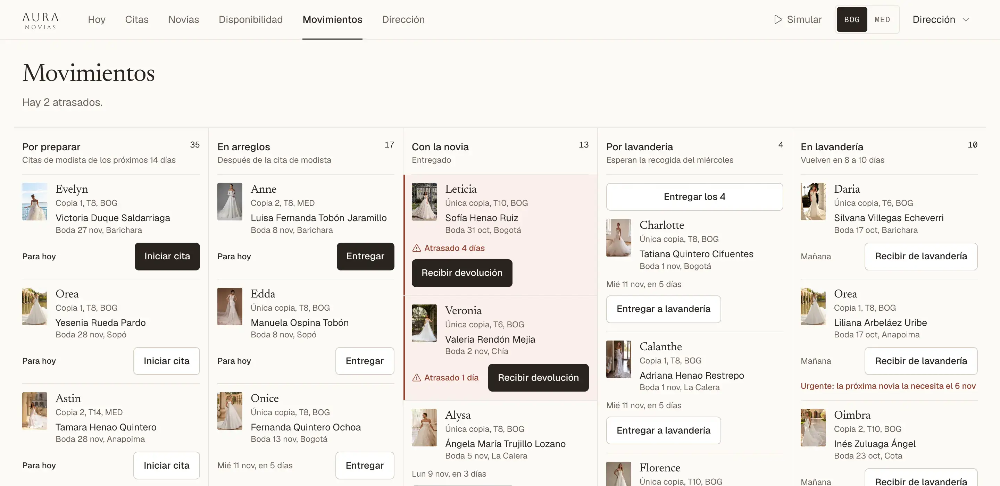
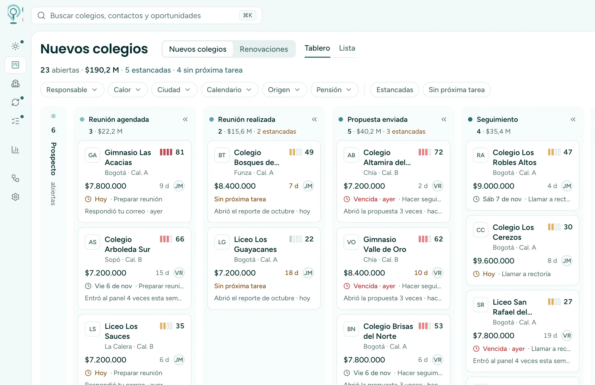
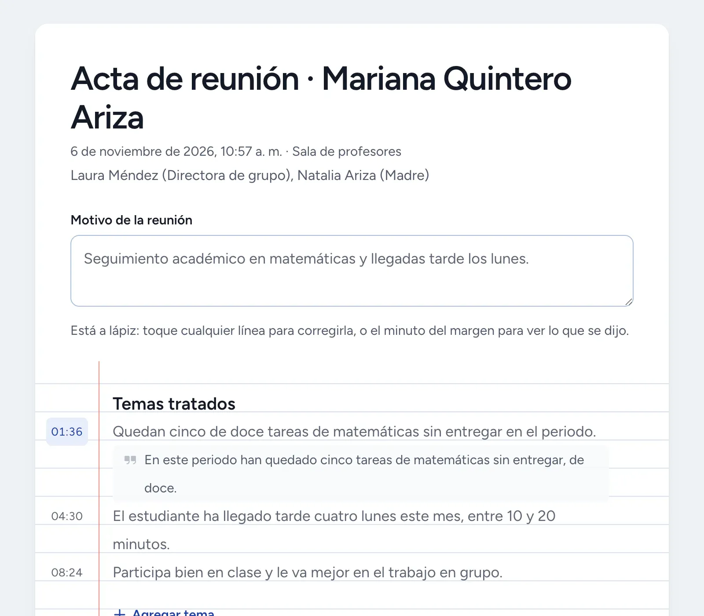
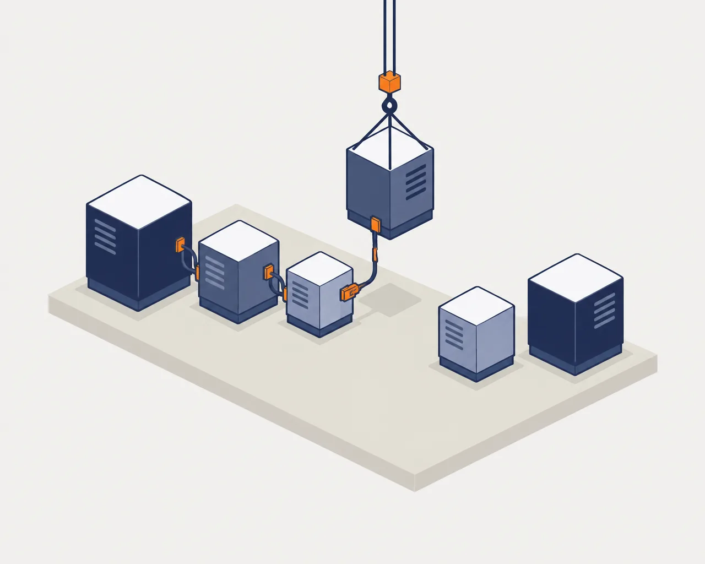
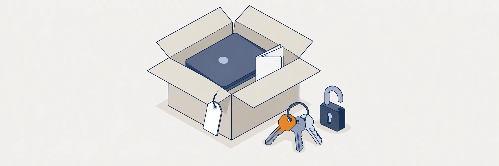

Los Excel no cuadran
Hay veinte hojas de cálculo, ninguna cuadra con la otra y nadie las tiene al día.
Te construyo el sistema operativo de tu empresa, el software que reemplaza los veinte Excel y el copiar y pegar. Trabajo con empresas de 5 a 40 personas.
El cuestionario toma unos dos minutos. Si prefieres escribirme directo, mi WhatsApp es el +57 313 246 5100.

Hay veinte hojas de cálculo, ninguna cuadra con la otra y nadie las tiene al día.
Llegan por WhatsApp y alguien los pasa a mano a un Excel al final del día.
Para saber cuánto se vendió ayer toca preguntarle a alguien. Si renuncia, se lleva el proceso.

Empezamos por la que más duele y no pasamos a la siguiente hasta que quede conectada.
La primera semana me siento con quien la va a usar y miro cómo se hace hoy.
WhatsApp, el programa contable y las hojas que sí sirven se quedan y se conectan.
Aura Novias, una tienda de novias: citas, inventario de vestidos, contratos, pagos y el WhatsApp de cada novia en un solo sistema. Reemplazó la herramienta de reservas y el libro de novias en papel.

Un CRM hecho para su forma de venderle a colegios. Reemplazó Kommo, los correos y la memoria del equipo.

La inteligencia artificial escribe el borrador y la familia lo firma desde el celular. Reemplazó las actas a mano.

También le he construido tecnología a


Hablo contigo y con la gente que hace el trabajo.
Semanas 1 y 2Te digo qué atacar primero y te entrego una parte funcionando.
Semanas 2 y 3Voy cajita por cajita hasta que tu equipo lo usa sin mí.
Semanas 4 a 16En la semana 3 ya tienes algo funcionando. Si no te sirve, ahí paramos.


Corre con tus datos reales, tu gente ya lo usa y te queda grabado el entrenamiento.
El código, las cuentas y los accesos son de tu empresa, y no pagas una mensualidad por usuario.
Les enseño a ti y a tu equipo a hacer cambios con inteligencia artificial.
Cronometramos el proceso antes y después, y lo revisamos al mes y a los dos meses.
Valoración inmobiliaria con datos.
Vendida a RED AtlasLibranza entre personas.
Vendida a Taurus CapitalAutenticación de pagarés para un mercado que no existía.
QuebróFlores por suscripción.
FracasóEducación superior; le construí los cursos, el CRM y el portal.
HoyDirigí unas cuarenta personas y el sistema de riesgo.
Como empleadoNo hace falta. Parte de mi trabajo es explicarlo claro, y si algo no se entiende es culpa mía. Mis clientes son marcas de ropa, restaurantes, distribuidoras, importadores y empresas de servicios.
Si ya vendes y son entre cinco y cuarenta personas, estás justo donde más sirvo. Donde no sirvo es cuando la empresa ya es grande y lo que necesita es crecer mucho más.
Casi nunca. Primero miro qué de lo que ya tienes sirve y por qué la gente no lo abre. Muchas veces el programa está bien pero desconectado del resto, y por eso llenarlo es doble trabajo.
Con uno solo. Miramos cuál usa la gente de verdad, pasamos lo que sirve del otro y apagamos el que sobra. Mientras existan los dos, alguien va a tener que llenar los dos y se va a equivocar.
El código queda a nombre de tu empresa, y antes de irme les enseño a cambiarlo con inteligencia artificial: cómo pedir el cambio y cómo dejarlo andando. La idea es que no dependas de mí.
Te lo digo en la primera llamada y, si puedo, te recomiendo a alguien que sí te sirva.